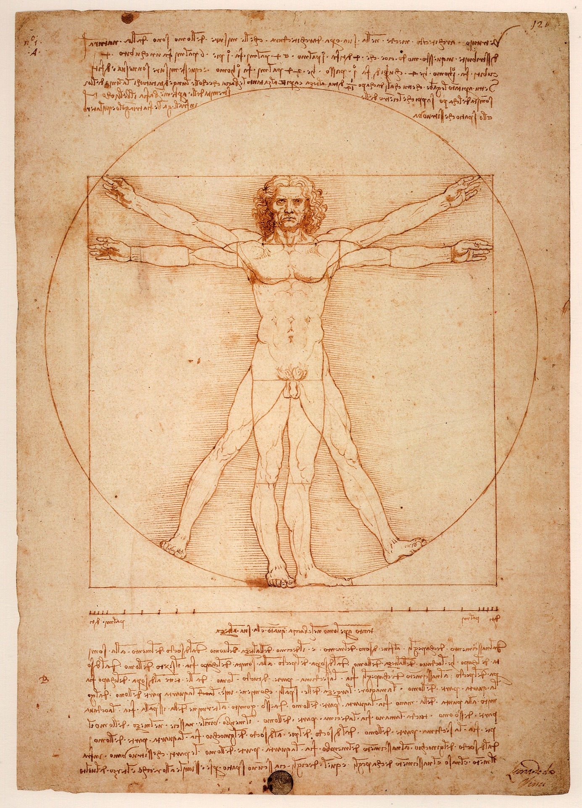

<!-- Services Section -->
    <section id="intro">
        <div class="container">
            <div class="row">
                <div class="col-lg-12 text-center">
                    <h2 class="section-heading">“The human foot is a masterpiece of engineering and a work of art.” (L. da Vinci)</h2>
                </div>

            </div>
            <div class="row">
                <p class="intro-text">The human foot’s architecture is the culmination of extensive evolutionary adaptation to meet the demands of bipedal walking and running. Its arched structure, coupled with the musculoskeletal components
                of the ankle-foot complex, ensures energy-efficient gait across diverse terrains and activities.
                Emulating the locomotion efficiency of the human foot has been a challenge in robotic and prosthetic
                design over the last decades. Several passive and active prosthetic feet have been, indeed, developed,
                while research into robotic foot design remains limited.
                In both the case of bipedal robots and that of individuals with lower limb loss, artificial foot design
                critically influences whole-body locomotion. Although most commercial prosthetic and robotic feet provide stability on level ground, their performance usually deteriorates on uneven terrain, often leading to
                falls. Consequently, there remains significant scope for improving artificial foot design to enhance locomotion
                in real-world scenarios.</p>

                <div class="col-lg-12">
                    
                </div>
                <p class="intro-text">This workshop aims to gain insights from the human foot to inspire and discuss novel perspectives for future robotic and prosthetic foot designs.
                    By convening experts in biomechanics, robotics, prosthetics and computational modelling, this initiative will foster interdisciplinary knowledge exchange and innovative solutions. </p>
                 <center><a href="#" class="page-scroll btn btn-xl">Registration Closed</a></center>
            </div>
        </div>
    </section>